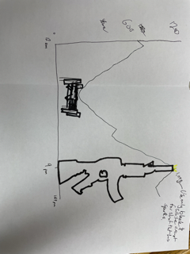

What can we and the police learn from shooting patterns in Philadelphia.
Looking at the shooting victims from the past seven or so years, we can see some interesting trends emerge. Such as cold weather and no celebreations can limit the number of shooting victims. This continues with more recent trends such as COVID providing a massive hike in shootings.
But, what about times? How can we use the time to better police the neighborhood? That is for me to speculate and the police to decide, but giving the information to you is important. To show this I am giving you a line chart that can help guide you in the treacherous city of Philadelphia.
